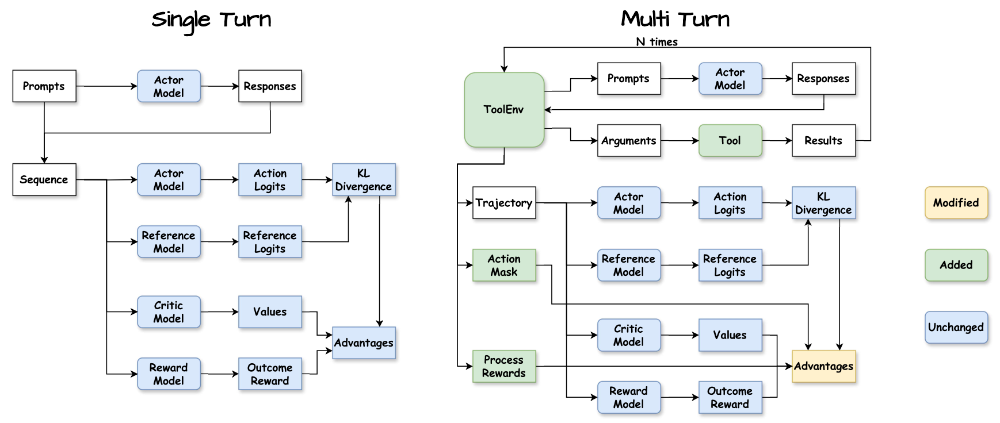
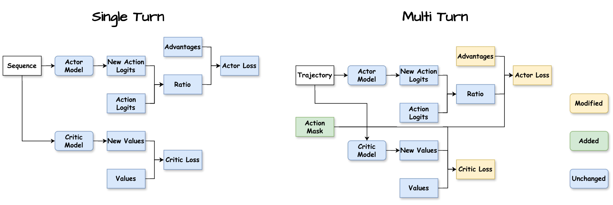
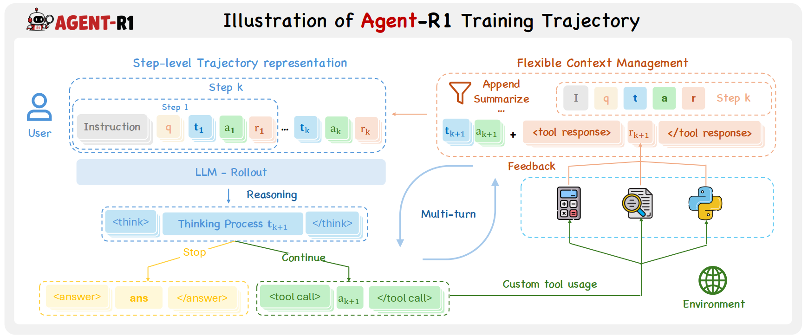
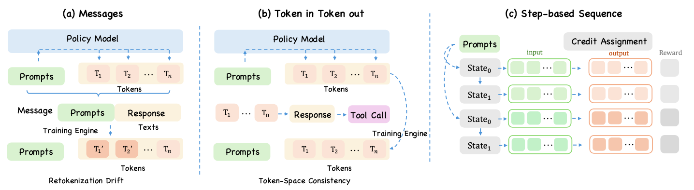
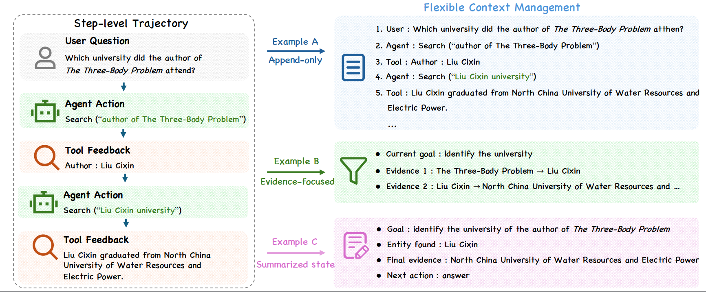
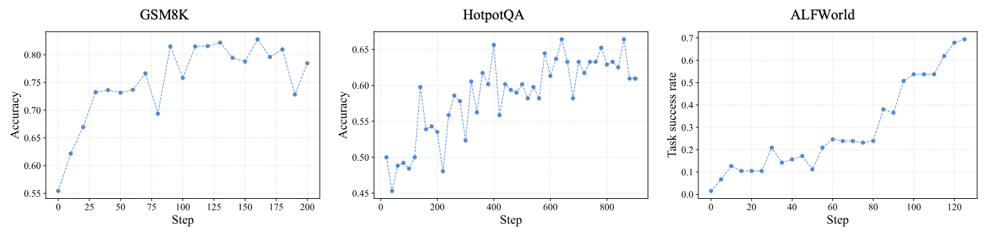
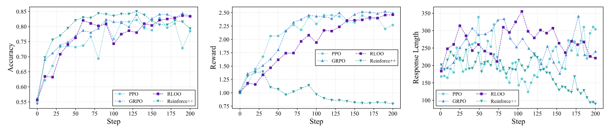
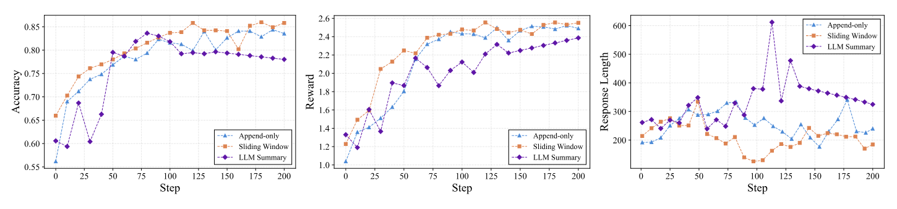

Agent-R1：统一模块化 Agentic RL 框架
以 step-level MDP、结构化轨迹表示与灵活上下文管理，
为多轮工具交互 Agent 提供可复用的强化学习训练底座。
中国科学技术大学 · 认知智能全国重点实验室
以 step-level MDP、结构化轨迹表示与灵活上下文管理，
为多轮工具交互 Agent 提供可复用的强化学习训练底座。
中国科学技术大学 · 认知智能全国重点实验室
现代 LLM 基础设施已经形成清晰分层：推理与服务侧由 vLLM、SGLang 等系统提供高吞吐生成、批量解码和结构化执行； 训练侧由 DeepSpeed、FSDP、Megatron-LM 等框架支持分布式优化与大规模并行训练。 这种模块化基础设施对常规 LLM 开发有效，但强化学习训练需要把推理侧 rollout 与 训练侧 optimization 重新接成一个闭环。
从监督学习到 RL 的变化不只是换一个 loss。监督训练的数据和标签通常预先准备好，而 LLM RL 需要模型先采样生成， 再由奖励模型、可验证规则或环境反馈评估，最后把这些轨迹送回优化器。RLHF、RLVR、PPO、GRPO 等方法都依赖这一 rollout-reward-replay-update 循环。
Agentic RL 又进一步把单轮 prompt-response 扩展成多轮交互：模型需要观察上下文、调用工具、接收环境反馈， 并在长期轨迹中持续调整后续动作。因此，框架必须同时处理工具执行、环境状态、轨迹构造、上下文管理和策略优化。 这也是 Agent-R1 采用 step-level MDP 的直接动机。


Agent-R1 从论文中的核心观察出发：把整条轨迹看作一个不断增长的 token 序列，已经不足以描述真实的 Agentic RL。 新版 Agent-R1 围绕 step-level 的轨迹表示 与 灵活的上下文管理 重新组织训练抽象。 每个交互步骤都保留观察、LLM 动作、环境反馈、奖励和下一观察，使 rollout 与训练保持一致， 同时允许环境按任务需要构造下一轮上下文，而不是被固定的 append-only 历史拼接策略束缚。
Agentic RL 的难点不只是把已有 RLVR 算法搬到 Agent 上。多轮工具交互会改变状态和信用分配的基本形态：
多轮 Agent 行为包含观察、动作、工具反馈和下一观察，简单拼接成一个 token 序列会隐藏交互边界。
message trace 重新转文本再 tokenize 会产生 retokenization drift，影响 log-prob、action mask 与动作边界。
工具输出可能冗长，历史可能无关；下一轮观察应由环境按任务构造，而不只是无界追加历史。
优化目标、奖励、workflow、rollout、model serving 和训练后端常被反复重写，难以复用和公平比较。
Agent-R1 将每一轮交互视为原生 RL transition。环境接口可以写作
E(o_t, a_t) = (o_{t+1}, r_t, d_t, e_t)：
当前观察 o_t 触发 Agent 动作 a_t，环境返回下一观察、奖励、终止标记和反馈。
这个边界让 workflow、工具、环境和优化器都围绕同一个 step-native 抽象通信。
| MDP 组件 | Token-level / Message-level 管线 | Agent-R1 |
|---|---|---|
| 交互单位 | 通常以 token 流或 chat messages 组织，step 边界隐式存在 | 每个 step 显式保存观察、动作、环境反馈、奖励和下一观察 |
| 轨迹重放 | message trace 可能需要重新文本化和 tokenize，带来边界漂移 | 保留 rollout 时的结构与动作边界，使 replay 与训练保持一致 |
| 上下文构造 | 常见实现为 append-only 历史拼接 | 由环境定义 C(z_0,...,z_t)，可保留、摘要、裁剪或重排历史 |
| 信用分配 | 通常偏 token-level，过程奖励和 step 信号需要额外适配 | 同一 substrate 支持 token-level、step-level 或混合信用分配 |
在这个表示下，一条 rollout 被写作 τ = {z_t}，
其中 z_t = (o_t, a_t, e_t, r_t, o_{t+1})。
优化层仍然可以对动作内部 token 计算策略梯度，但奖励、mask 和 advantage 都能精确对齐到真实发生的 Agent 决策。
论文中将 Agent-R1 放在开源 Agentic RL 框架谱系中比较：veRL 与 slime 更偏 token-level， Agent Lightning 已强调 step-level 交互，但上下文管理多为隐式；Agent-R1 同时显式化 step-level MDP abstraction 与 flexible context management。
把交互步骤作为训练记录的基本单位，既保存精确 replay，又保留动作、反馈和奖励的语义边界。
下一观察由环境根据结构化历史生成，使训练可以研究不同 memory/context 策略对学习质量的影响。
Agent-R1 的目标是在算法侧与系统侧之间建立统一接口：算法侧关注 reward、advantage、credit assignment 和 policy objective； 系统侧关注 workflow 执行、rollout sampling、model serving 与大规模优化。新版框架用分层抽象把这些能力组织到同一训练基座中。

(o_t, a_t) → (o_{t+1}, r_t, d_t, e_t) 的形式驱动多轮交互，统一工具执行、反馈返回、奖励计算和终止判定。
Agent-R1 将 algorithm.adv_estimator 与 actor_rollout_ref.actor.policy_loss.loss_mode
分开配置：前者决定 advantage / return 的估计方式，后者决定策略损失形式。因此，框架可以在同一套环境、rollout 和 step trace
上组合不同的信用分配与优化目标，而不是把算法写死在任务流程里。
| 方法 | 信用分配粒度 | 是否需要 Critic |
|---|---|---|
| GRPO | Trajectory-level | 否 |
| PPO / GAE | Token-level | 是 |
| RLOO | Trajectory-level | 否 |
| REINFORCE++ | Token-level | 否 |
| REINFORCE++ Baseline | Token-level | 否 |
| GiGPO | Trajectory-level | 否 |
| StepPO | Step-level | 是 |
只让 Agent 动作 token 进入 policy loss，避免 prompt、工具结果或环境反馈被错误优化。
优势信号可以按 token 或 step 展开，并与动作边界对齐，便于研究更细粒度的信用分配。
同一环境和 rollout 配置下比较 GRPO、PPO/GAE、RLOO、REINFORCE++、GiGPO、StepPO 等方法，让优化器差异更可观察。
环境可以选择 append-only、sliding-window、summary 等上下文构造规则，并在相同训练设置下评估效果。
在多轮 Agent 训练中，轨迹表示首先要服务于 replay 与 optimization。 常见的 message trace 便于 workflow 构建和调试，但它并不保留 rollout 时模型实际生成的精确 token 序列； 如果训练时再把 messages 拼回文本并重新 tokenize，就可能移动动作边界，改变 action mask， 进而扭曲用于优化的 log-prob。另一类 flat token sequence 能避免重新 tokenize 的问题， 但仍把交互当成一条 append-only 序列，step 边界是隐式的。
Agent-R1 因此采用结构化的 step trace 作为原生轨迹抽象。 每条 rollout 被存成一组 step record，每个 record 显式保存 observation、action、environment feedback、reward 与 next observation。 这样既能忠实 replay 原始交互，又能知道哪一段 token 属于一次完整的 Agent 动作、这次动作触发了什么反馈、 以及反馈如何改变下一步观察。token-level objective 仍可作用在 step 内部的动作 token 上， step-level reward 或 process supervision 也可以直接对齐到对应 transition。

灵活的上下文管理是 Agent-R1 的第二个关键设计点。 多轮交互中，工具输出可能很长，中间推理可能对下一步决策并不重要，完整历史也可能超过有效上下文预算。 如果框架把下一轮 observation 固定为简单的 append-only 拼接，那么 replay 记录和模型可见上下文会被强行绑定在一起。
Agent-R1 将下一步上下文交给环境通过规则 o_{t+1} = C(z_0,...,z_t) 构造。
这意味着环境可以保留最新工具结果、摘要早期历史、过滤无关中间步骤，或按照任务需要重组可见上下文；
同时，完整 step trace 仍保留在训练记录中，供优化和分析使用。
因而，轨迹表示负责保存“真实发生了什么”，上下文管理负责决定“下一步模型应该看到什么”，两者通过同一套 step-level 设计连接。

message trace 方便调试，但训练时重新拼文本再 tokenize 可能改变动作边界。Agent-R1 用 step trace 保留 rollout 结构。
上下文构造被暴露为环境规则后，可以比较 append-only、sliding-window 与 LLM summary 等策略对学习的影响。
论文从两个角度评估 Agent-R1：一是框架能否迁移到不同 Agent 任务， 二是在固定训练设置下，上下文管理策略是否会影响学习质量。实验使用 Qwen3-4B， 覆盖算术推理、检索式多跳问答、具身交互场景和模拟在线购物。
| 方法 | GSM8K Acc. | HotpotQA Acc. | ALFWorld SR Seen | ALFWorld SR Unseen | WebShop Score | WebShop SR |
|---|---|---|---|---|---|---|
| ReAct | 53.1 | 25.8 | 7.14 | 2.98 | 51.58 | 23.8 |
| GRPO 多数最优 | 83.3 | 59.4 | 81.29 | 74.58 | 65.83 | 44.2 |
| PPO | 78.1 | 56.7 | 76.42 | 72.38 | 70.18 | 46.0 |
| Reinforce++ | 78.9 | 52.8 | 73.84 | 69.57 | 63.41 | 41.8 |
| RLOO | 81.6 | 55.2 | 79.08 | 73.46 | 68.02 | 45.1 |
表中四种代表性 RL 方法在不同任务上均显著优于 training-free ReAct baseline。 GRPO 在 GSM8K、HotpotQA 与 ALFWorld 上领先，PPO 在 WebShop 上最强， 说明 Agent-R1 能在统一框架中保留不同优化器的任务差异，而不是把算法行为“抹平”。这张表是实验快照，并不代表框架只支持这些算法。


在 GSM8K 的固定 GRPO 设置下，论文比较了 append-only、sliding-window 与 LLM-summarized context。 sliding-window 表现最好，append-only 较弱，summary-based context 在小模型设置下表现不佳。 这支持了 Agent-R1 的设计主张：上下文管理不是展示细节，而是会直接影响训练质量的环境接口。

如果本项目对您的研究有所帮助，请考虑引用：
感谢 DeepSeek-R1 提供的模型与启发性思路；感谢 veRL 团队提供的强大训练基础设施；感谢 RAGEN 团队的开创性探索对本项目早期方向的深刻影响。